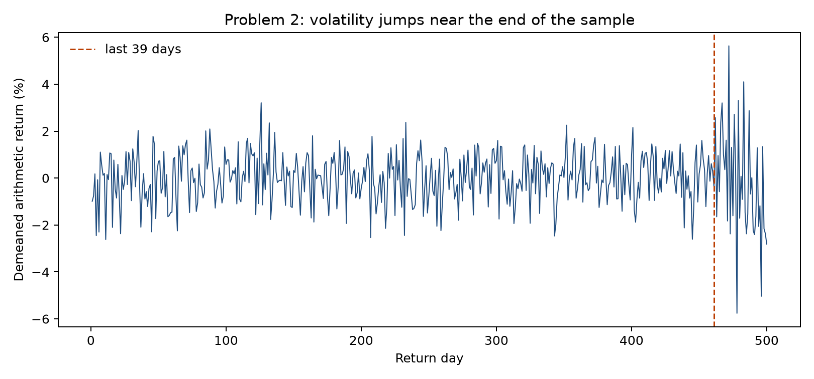
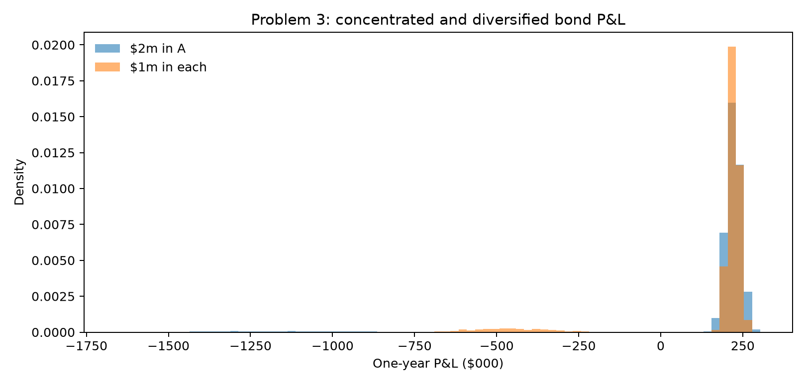
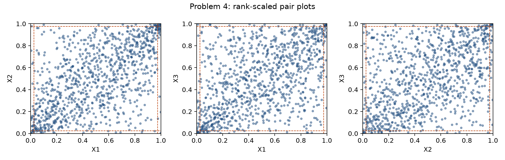

All numbers and figures are reproduced by python analysis.py.
Detailed run instructions are in README.md.
(a) The pairwise estimator can be non-PSD because each entry is estimated on a different set of dates. The entries need not be mutually consistent with any single joint data matrix. Complete-case correlation is a Gram matrix computed from the same 81 rows and is therefore PSD (positive definite here, apart from possible floating-point error).
(b) Since IDX is nearly a fixed linear combination of A–D, one direction in the five-series space has almost no variance. I therefore expected a smallest eigenvalue near zero. That makes this data unusually exposed: even a small inconsistency introduced by pairwise samples can push that small eigenvalue below zero.
(c) Before calculating correlations, I expected entries involving D to be least reliable: D has only 96 observations and only 83 jointly with C. C–D should be the noisiest pair, followed by A–D and B–D. Counts confirm the unequal histories:
| A | B | C | D | IDX | |
|---|---|---|---|---|---|
| A | 242 | 242 | 221 | 93 | 242 |
| B | 242 | 242 | 221 | 93 | 242 |
| C | 221 | 221 | 228 | 83 | 228 |
| D | 93 | 93 | 83 | 96 | 96 |
| IDX | 242 | 242 | 228 | 96 | 250 |
Only 81 days contain all five series.
(d) The two estimated correlation matrices are:
Complete-case correlation
| A | B | C | D | IDX | |
|---|---|---|---|---|---|
| A | 1.0000 | 0.3967 | 0.2466 | 0.4136 | 0.8714 |
| B | 0.3967 | 1.0000 | 0.3169 | 0.2361 | 0.6709 |
| C | 0.2466 | 0.3169 | 1.0000 | 0.1852 | 0.5648 |
| D | 0.4136 | 0.2361 | 0.1852 | 1.0000 | 0.5719 |
| IDX | 0.8714 | 0.6709 | 0.5648 | 0.5719 | 1.0000 |
Pairwise correlation
| A | B | C | D | IDX | |
|---|---|---|---|---|---|
| A | 1.0000 | 0.4686 | 0.4309 | 0.4384 | 0.8696 |
| B | 0.4686 | 1.0000 | 0.4630 | 0.2767 | 0.7329 |
| C | 0.4309 | 0.4630 | 1.0000 | 0.1846 | 0.7136 |
| D | 0.4384 | 0.2767 | 0.1846 | 1.0000 | 0.6057 |
| IDX | 0.8696 | 0.7329 | 0.7136 | 0.6057 | 1.0000 |
| Ordered eigenvalue | Complete case | Pairwise |
|---|---|---|
| 1 | 0.001506 | -0.011072 |
| 2 | 0.548345 | 0.471422 |
| 3 | 0.693320 | 0.528367 |
| 4 | 0.870441 | 0.857381 |
| 5 | 2.886388 | 3.153902 |
Cholesky on the complete-case matrix succeeded. Cholesky on the pairwise matrix failed: Matrix is not positive definite. The failure is substantive rather than rounding: the smallest pairwise eigenvalue is -0.011072.
(e–f) I combined the pairwise correlations with each series’ full-history standard deviation. For weights (−0.40, −0.30, −0.20, −0.10, 1.00), the results are:
| Matrix | Minimum eigenvalue | Frobenius repair distance | Tracking variance |
|---|---|---|---|
| Unrepaired pairwise | -0.01107185 | 0 | -0.000001799 |
| Rebonato–Jaeckel | -7.51535850e-17 | 0.016182 | 0.000000681 |
| Higham | -1.74062766e-12 | 0.015520 | 0.000000679 |
The unrepaired “variance” is -0.000001799, which is impossible. Both repairs return essentially PSD matrices; tiny negative displayed eigenvalues are convergence or floating-point noise. Higham converged in 32 iterations and, as intended, has the smaller Frobenius distance.
(g) PSD means x′Σx ≥ 0 for every vector x. Portfolio variance is exactly x′Σx, so the negative number in (e) is a direct counterexample: the assembled covariance matrix is not PSD and cannot describe any valid joint distribution.
(h) The largest Higham moves were:
| Pair | Before | After | |Change| | Joint days |
|---|---|---|---|---|
| A-IDX | 0.8696 | 0.8625 | 0.007045 | 242 |
| C-IDX | 0.7136 | 0.7088 | 0.004765 | 228 |
| B-IDX | 0.7329 | 0.7287 | 0.004180 | 242 |
| D-IDX | 0.6057 | 0.6020 | 0.003727 | 96 |
| A-C | 0.4309 | 0.4332 | 0.002277 | 221 |
This does not match the simple “fewest observations” prediction: A–IDX moved most despite 242 joint days. Higham was not given observation counts. It finds the globally nearest correlation matrix in Frobenius norm, so it changes entries according to the offending eigenstructure and the unit-diagonal constraint, not estimated precision. The negative eigenvector is the near-singular direction (IDX against the weighted basket), so the IDX correlations take most of the correction.
(i) The complete-versus-pairwise gap is 0.423935, whereas the Higham repair is only 0.015520—about 27.3 times smaller. For these data, choosing complete-case versus pairwise estimation matters much more than choosing a repair method.

(a) Before fitting, my ranking from smallest to largest was: equal-weight Normal, historical, fitted t, EW Normal λ=0.97, EW Normal λ=0.94. The first three use all 500 observations; I expected the t to charge for heavy tails. The last stretch of the sample is visibly more volatile, so both EW estimates should be larger, with λ=0.94 reacting most strongly.
(b) Eyeballing the plot, the calm period ends somewhere in the last 40 days or so. To pin it down I picked the single break point that maximises a two-variance Gaussian likelihood, which gives the last 39 returns (the 50-day cut I first tried diluted the new regime with calm days). The EW diagnostics are:
| λ | Effective n | Half-life (days) | Weight on last 39 |
|---|---|---|---|
| 0.94 | 32.33 | 11.20 | 91.05% |
| 0.97 | 65.67 | 22.76 | 69.51% |
(c) Full-sample moments are mean -2.220446e-19, variance 0.00014190, skewness -0.156, and excess kurtosis 2.166. Excess kurtosis above 2 is not consistent with one stable normal regime; a variance mixture can create heavy unconditional tails even when returns within each regime are normal.
(d) One-day VaR on the $1,000,000 position:
| Method | VaR |
|---|---|
| Normal, equal-weight SD | $19,594 |
| Normal, EW λ=0.97 | $34,619 |
| Normal, EW λ=0.94 | $38,707 |
| Fitted Student t | $18,872 |
| Historical | $20,514 |
The t MLE is location 0.0001816, scale 0.0102900, and ν=8.27.
(e) The realized order is fitted t < equal-weight Normal < historical < EW λ=0.97 < EW λ=0.94. My t prediction was wrong. At the 5% quantile, the fitted t’s smaller central scale more than offsets its heavier far tail; heavy tails need not increase a fixed 5% VaR when scale is estimated simultaneously. The EW ordering agreed with the prediction.
(f) The first 461 days have SD 1.02%; the final 39 have SD 2.46%. Variance is about 5.9 times higher in the recent stretch, and pooling the two is what produces the excess kurtosis. The single fitted t is therefore largely describing a mixture of calm and volatile normal-like regimes, not necessarily one stationary heavy-tailed mechanism.
(g) The two EW VaRs differ by $4,088. Approximate one-standard-error VaR noise is $4,813 at λ=0.94 and $3,021 at λ=0.97; their combined scale is about $5,683. So the gap is about the size of the estimation noise, not clearly bigger. (Both estimates use the same returns, so their errors are correlated and the gap is somewhat more informative than this comparison suggests, but the conclusion is the same: the λ choice matters less than the fact that both are about twice the equal-weight number.) Opinion: I would use λ=0.94 for a trading limit because it reacts faster, and λ=0.97 for a capital number because it is more stable.

(a) A has mean 8.37%, skewness -4.82, and excess kurtosis 22.09; B has mean 8.50%, skewness -4.92, and excess kurtosis 23.09. The extreme negative skew and kurtosis make a symmetric Normal VaR structurally unsuitable.
(b) Losses beyond 20% occur 406 times for A, 393 for B, 782 for at least one, and 17 for both. A single name defaults in fewer than 5% of scenarios, so its 5% VaR should still sit in the profitable state. At least one defaults in 7.82%, so the diversified 5% quantile should land in the one-default loss state and have larger VaR. I expected diversified ES to be smaller, because averaging the tail recognizes that splitting the exposure reduces loss severity.
| Position | Hist VaR 5% | Hist ES 5% | Normal VaR 5% | Hist VaR 1% | Hist ES 1% |
|---|---|---|---|---|---|
| $1m A | −$84,570 | $443,628 | $139,971 | $649,701 | $709,548 |
| $1m B | −$86,063 | $419,587 | $132,277 | $640,393 | $700,805 |
| $2m A | −$169,140 | $887,257 | $279,941 | $1,299,403 | $1,419,096 |
| $1m A + $1m B | $414,604 | $541,997 | $143,466 | $598,123 | $716,408 |
(c–e) Negative 5% VaR for the single-name positions is meaningful: at the 5th percentile they still earn a profit. At 1%, the quantile enters the default states and concentrated VaR jumps to $1,299,403, above diversified VaR $598,123.
(f) VaR subadditivity fails dramatically:
ES remains subadditive:
The mechanism is probability mass crossing one quantile: individual default probabilities are below 5%, while the probability that either defaults is above 5%. ES averages beyond the cutoff and therefore sees the severity reduction.
(g) Normal VaR favors diversification ($143,466 versus $279,941). Its decision happens to be sensible from a tail-severity/ES perspective, but for the wrong reason: it replaces discrete default states with an elliptical, symmetric distribution and mechanically rewards lower variance.
(h) At 1%, both individual and combined quantiles lie inside default outcomes, so the concentrated position finally looks riskier. VaR’s failure is threshold-dependent: it appears when diversification moves probability mass across α, and disappears when α is already deep enough to see each name’s default state.
(a) Sample moments:
| Series | Mean | Variance | Skewness | Excess kurtosis |
|---|---|---|---|---|
| X1 | 0.000257 | 0.00014147 | -0.034 | -0.117 |
| X2 | -0.000252 | 0.00026142 | -0.615 | 7.125 |
| X3 | 0.000890 | 0.00010038 | 0.074 | 2.874 |
From moments alone I would fit Normal to X1 and t to X2 and X3. X2’s skewness and kurtosis are strongly influenced by its single minimum (−14.29%): removing it changes skewness to 0.056 and excess kurtosis to 1.725. The remaining kurtosis is still positive, so t remains plausible.

(b) Independence predicts only 0.625 joint days in each tail for each pair. Observed and model-implied counts are:
| Pair | Observed lower | Observed upper | Gaussian lower | Gaussian upper | t lower | t upper |
|---|---|---|---|---|---|---|
| X1-X2 | 6 | 8 | 6.25 | 6.00 | 9.58 | 9.17 |
| X1-X3 | 7 | 12 | 4.79 | 4.69 | 8.22 | 7.77 |
| X2-X3 | 6 | 9 | 4.61 | 4.13 | 8.04 | 7.42 |
The observed counts (6–12) are far above 0.625. The corners are denser than independence would allow, so I predicted the t copula would win.
(c) Margin fits (Normal has k=2; t has k=3):
| Series | Chosen | Normal AICc | t AICc | t ν | t location | t scale |
|---|---|---|---|---|---|---|
| X1 | normal | -6,022.54 | -6,020.49 | 2,890.18 | 0.000253 | 0.011860 |
| X2 | t | -5,408.49 | -5,518.18 | 5.27 | -0.000176 | 0.012544 |
| X3 | t | -6,365.69 | -6,428.02 | 6.09 | 0.000746 | 0.008181 |
(d) Kendall’s τ implies correlation matrix:
| X1 | X2 | X3 | |
|---|---|---|---|
| X1 | 1.0000 | 0.5833 | 0.5029 |
| X2 | 0.5833 | 1.0000 | 0.4644 |
| X3 | 0.5029 | 0.4644 | 1.0000 |
| Copula | Log likelihood | ν | AICc | BIC |
|---|---|---|---|---|
| Gaussian | 350.44 | — | -700.88 | -700.88 |
| t | 452.00 | 3.66 | -901.99 | -897.09 |
R is safely PSD (minimum eigenvalue 0.4128). Because R and the margins are frozen before comparison, the Gaussian copula has zero remaining free parameters and the t copula has one, ν.
(e) Portfolio risk for $1,000,000 in each asset:
| Method | VaR 5% | ES 5% | VaR 1% | ES 1% |
|---|---|---|---|---|
| Gaussian copula | $49,934 | $67,276 | $77,566 | $96,553 |
| t copula | $49,344 | $68,863 | $80,308 | $102,025 |
| Historical | $47,541 | $65,699 | $67,264 | $102,424 |
(f) The joint-tail table above scales the 100,000 simulations to expected counts per 1,000 days. Both copulas use the same underlying random draws, so the differences between them are not simulation noise. The t copula is closer for X1–X3 and for the upper tails, but it overshoots the lower-tail counts for X1–X2 (9.6 vs 6 observed) and X2–X3 (8.0 vs 6), and neither copula reaches the 12 observed X1–X3 upper days. With counts this small (6 to 12 days) these gaps are well within sampling variation.
(g) The t copula wins decisively: ΔBIC in its favor is 196.21, with ν=3.66. This agrees with the rank-plot prediction and observed joint tails.
(h) 1% ES moves the most: $96,553 under the Gaussian to $102,025 under the t, up $5,472 (5.7%). 1% VaR rises $2,742 (3.5%), 5% ES rises $1,587 (2.4%), and 5% VaR actually falls $590 (1.2%). The 5% VaR barely moves because the 5% quantile of the sum sits in the body of the distribution, where both copulas share the same R and the same margins. The t copula moves mass out of the middle and into the joint tails, so it only shows up once you look far enough out, and 1% ES, which averages everything beyond the 1% point, picks up the most of it.
(i) The t-minus-Gaussian log-likelihood gain is 101.559. The 793 days with every fitted uniform in [0.05,0.95] contribute 50.478, or 49.7%. Thus the information criterion scores the entire copula density, not merely a tail-count diagnostic; nearly half its preference comes from the middle.
(j) The most correlated pair is X1-X2 with ρ= 0.583. Its fitted t-copula tail-dependence coefficient is 0.322. It is exactly zero under a Gaussian copula for |ρ|<1.
(a) Let c=Cov(εA,εB)>0 for stocks sharing an industry. The residual part of portfolio variance is σ²A+σ²B+2c for P1 and σ²A+σ²B−2c for P2. Setting c to zero therefore understates P1 VaR and overstates P2 VaR. I expected the effect to be proportionally larger for P2 because the long-short position cancels much of the common market and industry movement.
(b) OLS with an intercept on the raw arithmetic returns. The α estimates are tiny and I set them (and the market mean) to zero afterwards in the simulation, following the zero expected return assumption:
| Stock | α | β | Residual SD |
|---|---|---|---|
| A | 0.0205% | 1.0353 | 1.289% |
| B | 0.0315% | 0.9354 | 1.154% |
The residual correlation is 0.6983, strong evidence that independent residuals are inappropriate.
(c–d) One-day 5% VaR:
| Method | P1: long A + long B | P2: long A − long B |
|---|---|---|
| Simulation: full residual covariance | $50,192 | $15,759 |
| Simulation: independent residuals | $44,192 | $28,486 |
| Delta Normal: sample stock covariance | $50,415 | $15,834 |
(e) The shortcut moves both portfolios exactly as predicted. It lowers P1 from $50,192 to $44,192, but raises P2 from $15,759 to $28,486 (the same random draws drive both cases, so this gap is purely the residual correlation). P2 is more exposed in percentage terms because positive residual covariance is a hedge for a long-short portfolio; deleting it removes the hedge.
(f) Full-model simulation and Delta Normal agree within Monte Carlo error: P1 is $50,192 versus $50,415; P2 is $15,759 versus $15,834. OLS makes fitted values orthogonal to residuals, and jointly normal market and residual draws pass through a linear model to produce jointly normal stock returns with the sample covariance. The equivalence stops if the market or residuals are non-normal, dependence is nonlinear or time-varying, returns have nonzero conditional means, or portfolio payoffs are nonlinear.
The analysis source is analysis.py. It reads only the five supplied CSV files,
creates the three figures, and writes results.json. The README lists environment requirements and all
commands.